결과가 나온 뒤에 과거를 비판하는 사후 확증 편향(Hindsight Bias)을 제거하세요.
Trace는 결정 당시의 정보·논리·전제·확신도를 시간축에 안전하게 보존하고,
과거 시점으로 Decision Replay하여 판단의 진짜 품질을 자산화합니다.
The Decision Matrix
철저한 근거와 명확한 전제로 기대치를 달성한 성공 사례. 조직의 핵심 플레이북으로 내재화합니다.
당시 정보 수준에서 최선의 선택이었으나 예상치 못한 외생 변수로 실패한 사례. 담당자를 비난하지 않고 전제를 갱신합니다.
근거와 전제가 빈약했으나 운 좋게 성공한 사례. 재현 불가능한 성공에 도취되는 것을 방지합니다.
전제 오류와 확신 과잉으로 발생한 오판. 당시 어떤 신호를 놓쳤는지 AI와 함께 회고하여 학습합니다.
01 · STRUCTURED REASONING
산발적인 회의록 대신, 판단에 꼭 필요한 5가지 핵심 요소를 단계별로 기록합니다.
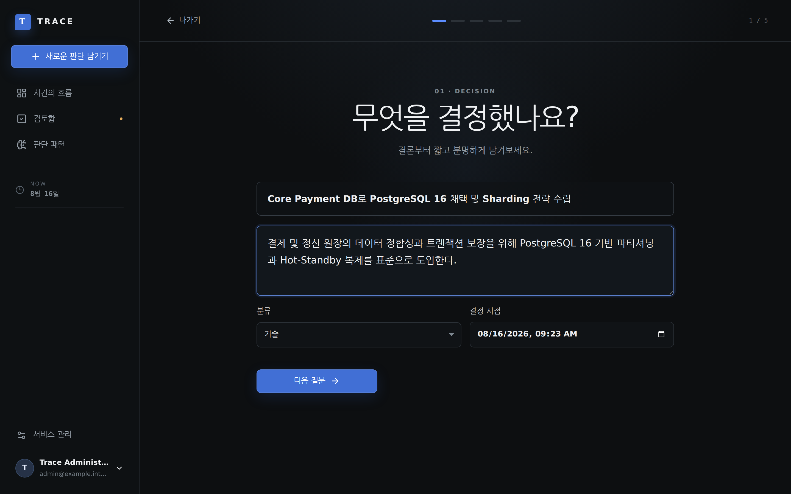
02 · TIME TRAVEL REPLAY
Time Slider를 움직이면 사후에 알게 된 결과와 증거가 그래프에서 완전히 필터링됩니다. 당시 알고 있던 정보만으로 과거의 나를 마주하세요.
known_at > replay_time인 미래 노드 완벽 차단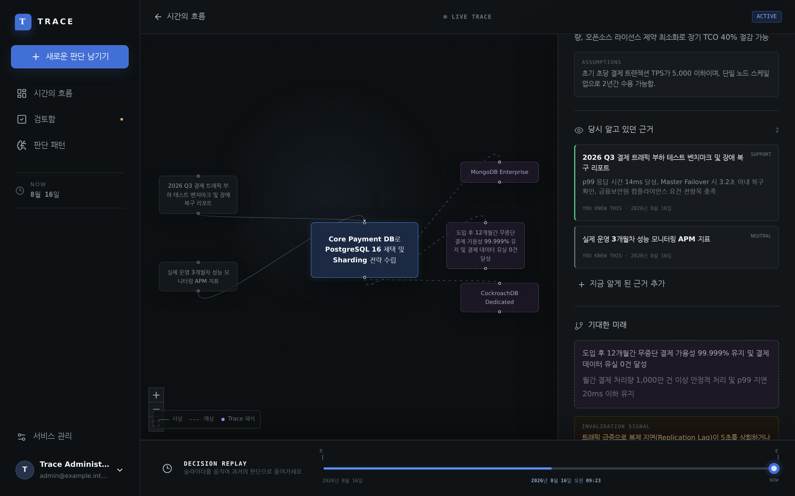
03 · DECISION INTELLIGENCE
시간이 흐를수록 축적되는 의사결정 데이터를 통해, 나의 확신도가 실제 결과와 얼마나 일치하는지 교정(Calibration)할 수 있습니다.
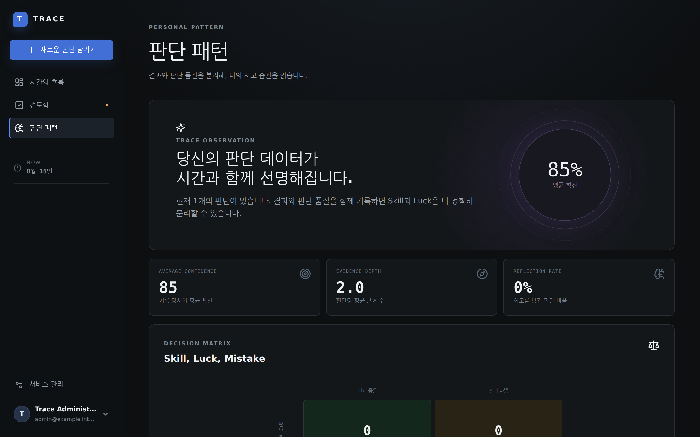
Product Tour
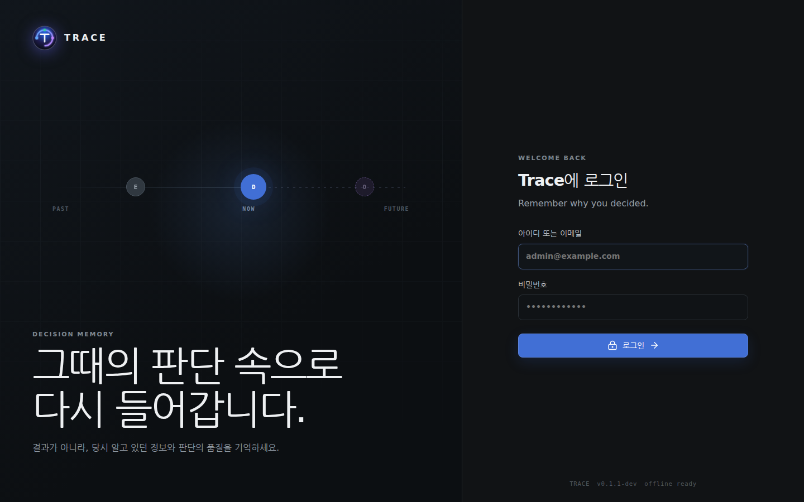
로컬 관리자 및 Keycloak OIDC 지원
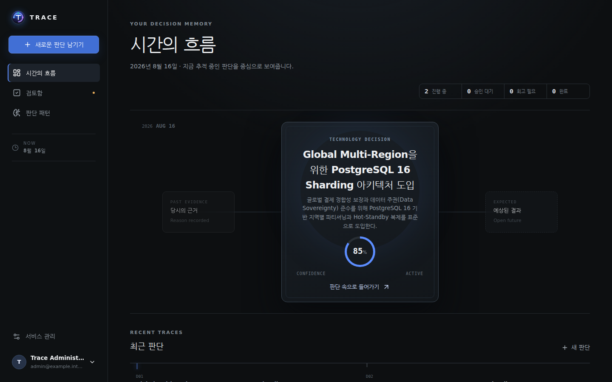
진행 중인 의사결정 타임라인
판단 제목, 결론, 카테고리, 시점
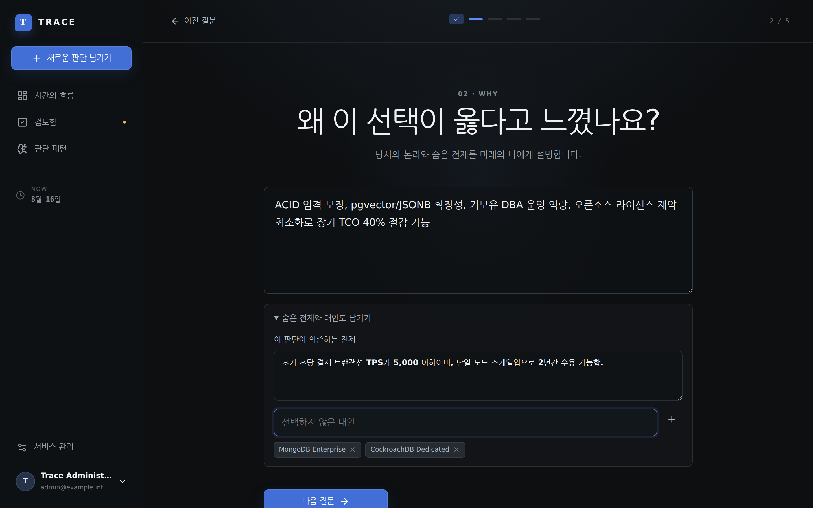
선택 이유, 숨은 전제, 대안 목록
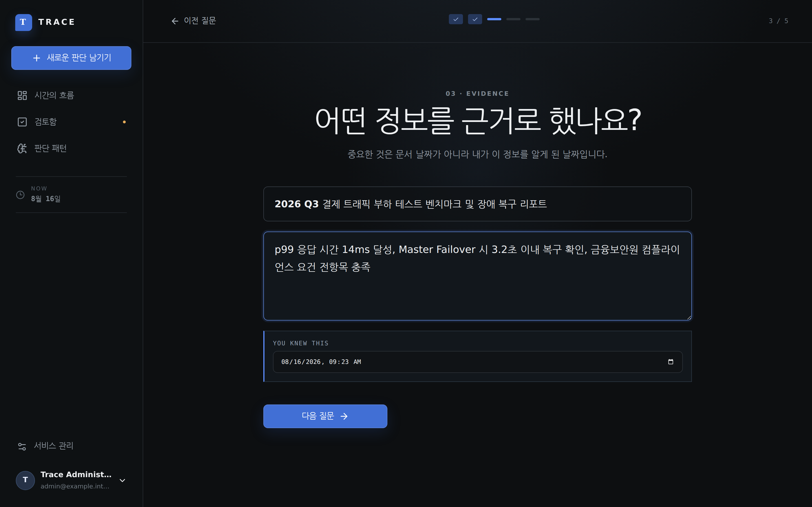
앎의 시점이 바인딩된 증거
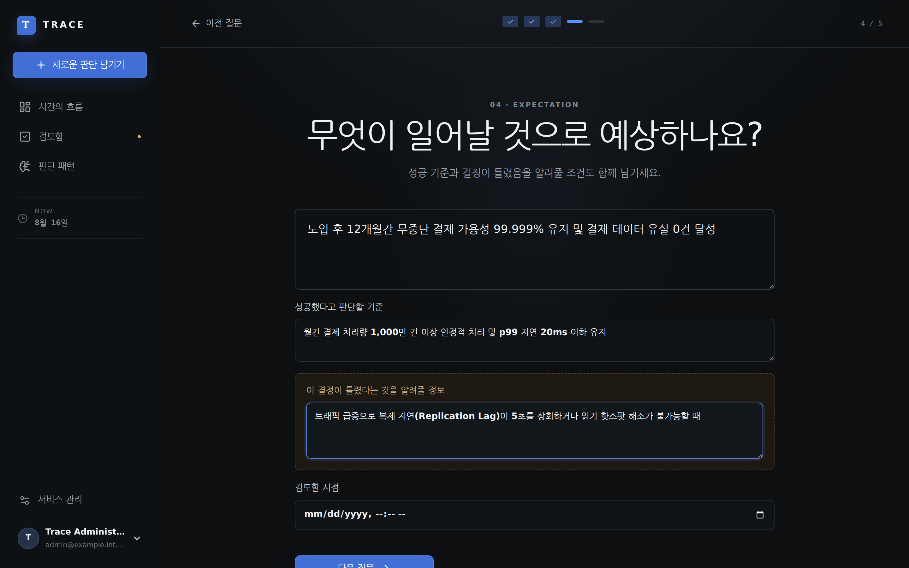
성공 기준 및 Invalidation 반증 신호
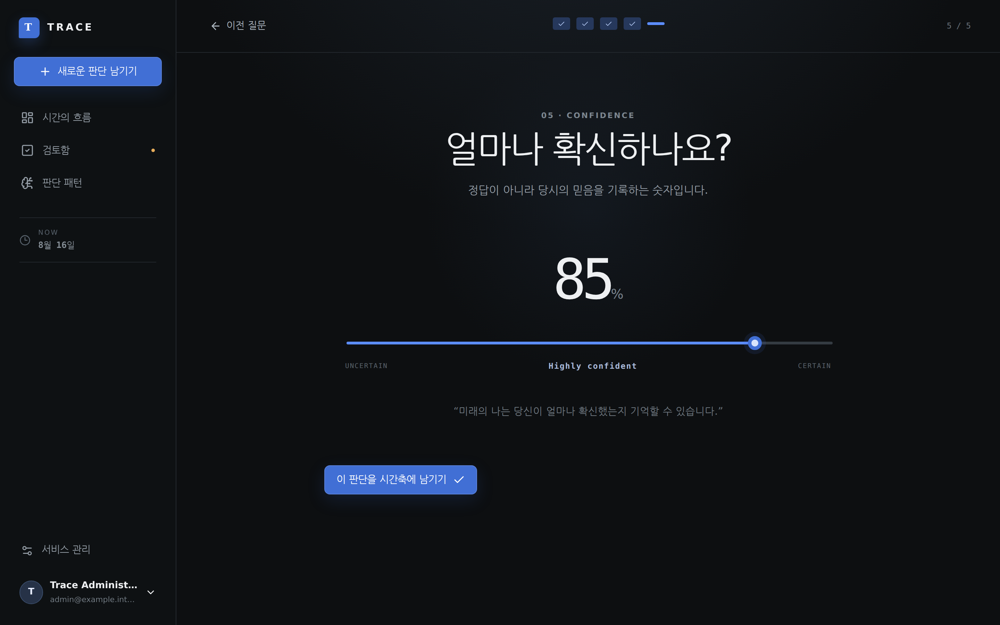
0~100% 확신 수준 게이지
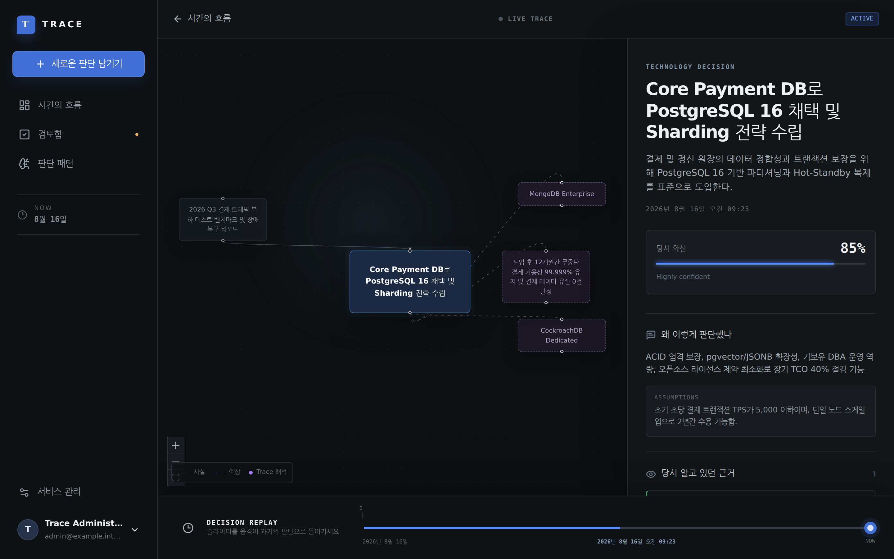
React Flow 기반 의사결정 시각화
과거 시점 시각화 및 미래 정보 필터링
Skill vs Luck 매트릭스 및 통계
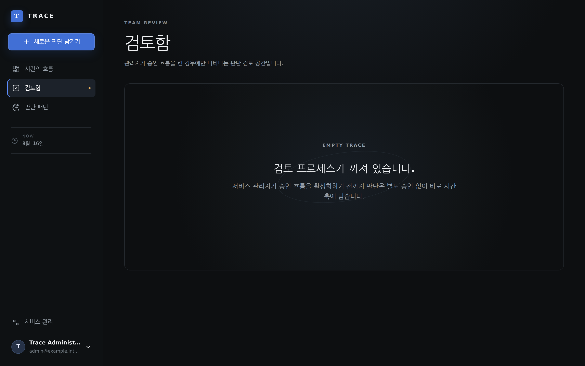
팀장 검토 및 승인 대기열
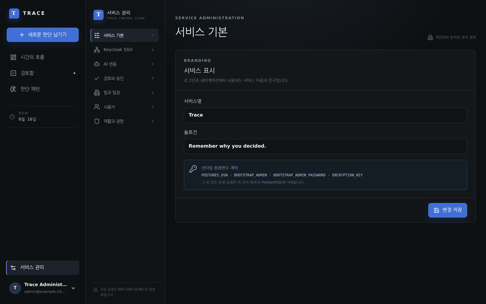
RBAC, Encryption, OIDC, LLM 설정
Enterprise Specifications
Ready to deploy?